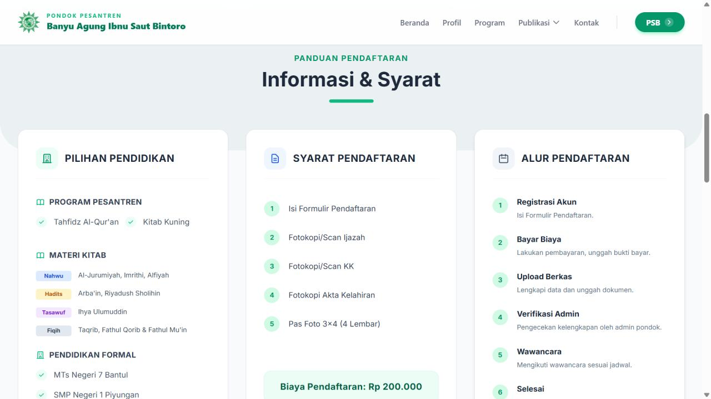
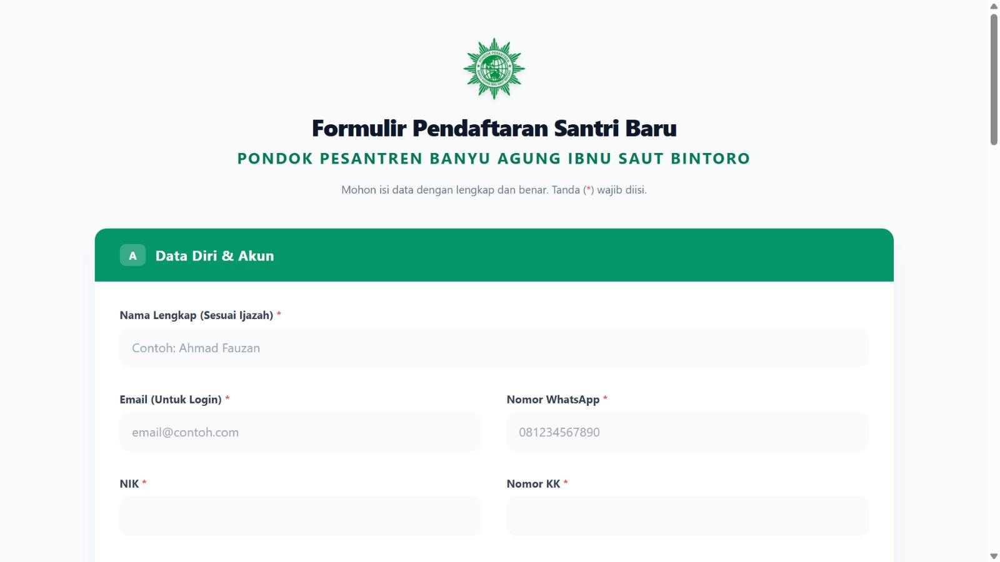

Penerimaan Santri Baru
Pondok Pesantren Banyu Agung

Sistem Penerimaan Santri Baru Ponpes Banyu Agung
Peran
System Analyst dan Developer
Metode
Waterfall
Pemodelan
Flowchart dan UML (Use Case, Activity, Sequence, Class)
Pengujian
80 skenario Black-box, UAT 94% (20 responden)
Tentang proyek
Website penerimaan santri baru (PSB) untuk Pondok Pesantren Banyu Agung. Proyek ini adalah tugas akhir saya, dibuat untuk mengatasi hambatan pendaftaran yang sebelumnya dilakukan secara manual. Saya mengerjakannya dari analisis kebutuhan sampai website dipakai, dengan metode Waterfall dan pendekatan yang berangkat dari kebutuhan pengguna. Perancangannya didokumentasikan dengan Flowchart dan UML (Use Case, Activity, Sequence, Class).
Yang saya lakukan
Porsi terbesar ada di analisis dan perancangan, lalu saya lanjutkan sendiri sampai tahap pengembangan.
Analisis dan perancangan
- Requirement gathering melalui observasi dan wawancara dengan pimpinan, admin, dan santri.
- Menganalisis proses pendaftaran manual untuk mengidentifikasi hambatan operasional.
- Memodelkan proses bisnis As-Is dan To-Be dengan Flowchart.
- Memodelkan kebutuhan dan alur sistem dengan UML (Use Case, Activity, Sequence, Class).
- Membuat wireframe antarmuka di Figma berdasarkan kebutuhan pengguna dan alur sistem.
Pengembangan
- Membangun website dari rancangan tersebut menggunakan CodeIgniter 4 dan Tailwind CSS, dengan MySQL sebagai database.
Pengujian
- Menyusun dan menjalankan 80 skenario Black-box Testing pada form login dan tiga peran pengguna, seluruhnya berhasil.
- Menyusun skenario dan mendampingi UAT bersama 20 responden, dengan tingkat persetujuan 94%.
Dokumen analisis dan perancangan
Seluruh dokumen proyek ini terkumpul di Notion, dari proses bisnis sampai hasil pengujian.
Teknologi dan metode
Tangkapan layar

